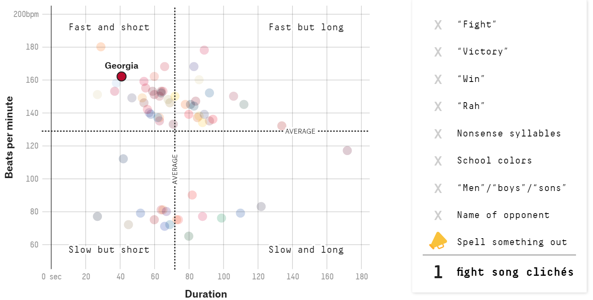

This data comes from FiveThirtyEight’s article https://projects.fivethirtyeight.com/college-fight-song-lyrics/. It contains stats on the fight songs of 65 schools – all those in the Power Five conferences (the ACC, Big Ten, Big 12, Pac-12 and SEC), plus Notre Dame– including duration, beats per minute, and mentions of typical themes of a fight song. I am going to try to recreate the graph of fight song beats per minute versus duration. The original graph is below (with UGA selected); it is interactive, allowing users to select a university to see where they fall on the fight song bpm vs duration scale as well as how many “fight song cliches” it contains.

Here I load all the packages I need to recreate this graph and load the data provided by FiveThirtyEight.
#load packageslibrary(tidyverse)
── Attaching core tidyverse packages ──────────────────────── tidyverse 2.0.0 ──
✔ dplyr 1.1.0 ✔ readr 2.1.4
✔ forcats 1.0.0 ✔ stringr 1.5.0
✔ ggplot2 3.4.1 ✔ tibble 3.1.8
✔ lubridate 1.9.2 ✔ tidyr 1.3.0
✔ purrr 1.0.1
── Conflicts ────────────────────────────────────────── tidyverse_conflicts() ──
✖ dplyr::filter() masks stats::filter()
✖ dplyr::lag() masks stats::lag()
ℹ Use the conflicted package (<http://conflicted.r-lib.org/>) to force all conflicts to become errors
library(ggplot2)library(plotly)
Attaching package: 'plotly'
The following object is masked from 'package:ggplot2':
last_plot
The following object is masked from 'package:stats':
filter
The following object is masked from 'package:graphics':
layout
#load the datafight_songs <-read_csv("data/fight-songs.csv")
Rows: 65 Columns: 23
── Column specification ────────────────────────────────────────────────────────
Delimiter: ","
chr (19): school, conference, song_name, writers, year, student_writer, offi...
dbl (4): bpm, sec_duration, number_fights, trope_count
ℹ Use `spec()` to retrieve the full column specification for this data.
ℹ Specify the column types or set `show_col_types = FALSE` to quiet this message.
The original graph includes intersecting lines with the average bpm and duration, so I took the mean of each column to determine those exact values so I could include them in my recreation.
fight_songs %>%pull(bpm) %>%mean()
[1] 128.8
fight_songs %>%pull(sec_duration) %>%mean()
[1] 71.90769
Now to the graphing. I decided to create this graph in ggplot first and then make it interactive using the ggplotly() function from plotly.
graph <- fight_songs %>%#color code each point by school name and include number of tropesggplot(aes(x=sec_duration, y=bpm, color=school, text=trope_count)) +#make a scatter plotgeom_point(size=3, alpha=0.5) +#include the average lines using the means I calculated above.geom_vline(xintercept =71.90769) +geom_hline(yintercept =128.8) +#omit the legend theme(legend.position="none") +#shift scalescale_x_continuous(limits=c(0,180), breaks =seq(0,180,20))+scale_y_continuous(limits=c(50,200), breaks=c(0,60,80,100,120,140,160,180,200)) +#match the quadrant labels annotate("text", x =20, y =65, label ="Slow but short") +annotate("text", x =20, y =190, label ="Fast and short") +annotate("text", x =135, y =190, label ="Fast but long") +annotate("text", x =135, y =65, label ="Slow and long") +#match the axes labels and titlelabs(x="Duration", y="Beats per Minute") +ggtitle("How Fight Songs Stack Up")
ggplotly(graph)
There were two main things I struggled with in this recreation. I searched and searched for some “university color palette for R” but came up empty. The only options I was left with were using default ggplot colors or making my own using hex codes for each school. I decided that I would use default colors to save myself some sanity (and each school has its own color, just not its school color). I also could not figure out how to include a separate chart of sorts for the number of tropes in each song; after some searching, I found that the aes(text= ) in ggplot() mapping could be used to display the trope number in the hover menu after converting using ggplotly(). You can see in the final that Georgia does indeed have 1 fight song cliche in my recreation (the number at the bottom of the hover menu).
I played around with ggvis for a few hours on my first attempt and, while I found it interesting with cool outputs, I had a hard time figuring out how to add all the elements that I needed to recreate this graph. Upon reading, I learned that ggvis is a sort of work-in-progress, and everything in ggplot does not have a direct translation to ggvis. I think ggvis could be used to make some really cool visualizations, but I was unsuccessful in using it for this exercise.
Overall, this recreation is not an exact replica of the original but I think it turned out pretty good and I really enjoyed getting to play around with the interactive features of plotly().